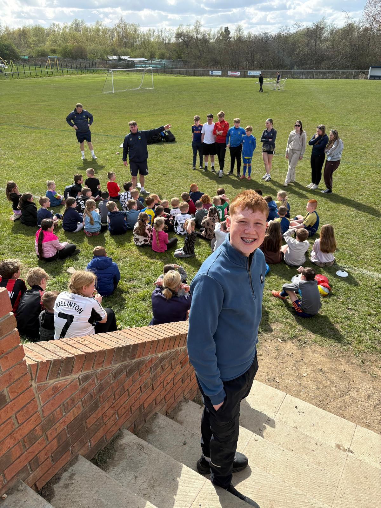

Hi, I'm Ryan Parsons and I'm from Cramlington. I currently serve as a Member of Youth Parliament for Northumberland, where I work to ensure that the voices of young people are heard and represented. Outside of my role as an MYP, I have a passion for football and enjoy boxing as a hobby.
Through my work, I meet with local leaders, organisations, and young people from across the county to discuss the issues that matter most to them, including mental health, wellbeing, safety, and opportunities for young people. I am committed to making a positive difference in Northumberland and helping to create a brighter future for the next generation.
